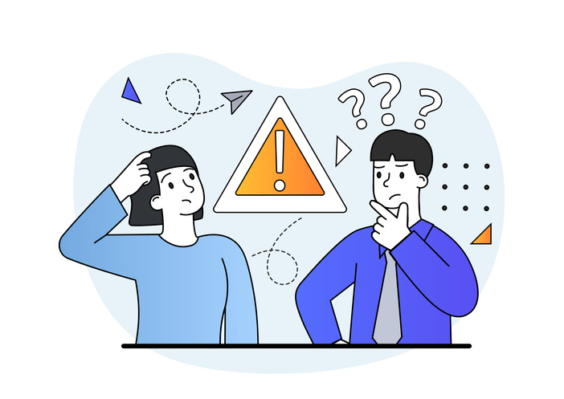

<ion-header>
  <ion-toolbar>
    <ion-buttons slot="start">
      <ion-button routerLink="/home">
        <ion-icon name="home"></ion-icon>
      </ion-button>
  </ion-buttons>
  <ion-title>Dispositivo: {{this.idDispositivo}}</ion-title>
  <!-- <ion-buttons slot="end">
    <ion-button routerLink="/">
      <ion-icon name="home"></ion-icon>
    </ion-button>
  </ion-buttons> -->

   </ion-toolbar>
</ion-header>

<ion-content *ngIf="!this.onError">
  <div id="highcharts" style="width: 100%; height: 300px;"></div>
  <br>

  <ion-button expand="block" shape="round" (click)="cambiarEstadoEV()">
    <p *ngIf="!this.estadoEV || this.onEVError"> Abrir Electroválvula</p>
    <p *ngIf="this.estadoEV" > Cerrar Electroválvula</p>
    <ion-icon slot="end" name="caret-forward"></ion-icon>
  </ion-button>
  <ion-button expand="block" shape="round"  routerLink="/medicion/{{this.idDispositivo}}" >
    <p >Ver todas las Mediciones</p>
    <ion-icon slot="end" name="caret-forward"></ion-icon>
  </ion-button>
  <ion-button expand="block" shape="round" routerLink="/log/{{this.dispositivo.electrovalvulaId}}">
    <p>Ver logs de riego</p>
    <ion-icon slot="end" name="caret-forward"></ion-icon>
  </ion-button>
</ion-content>
<ion-content *ngIf="this.onError">
  <h2 style="text-align: center;"> El dispositivo no tiene mediciones</h2>
  <br>
  
  <ion-button expand="block" shape="round"  routerLink="/home">
    <p>volver al home</p>
    <ion-icon slot="end" name="home"></ion-icon>
  </ion-button>
  <ion-button expand="block" shape="round" (click)="cambiarEstadoEV()">
    <p *ngIf="!this.estadoEV || this.onEVError"> Abrir Electroválvula</p>
    <p *ngIf="this.estadoEV" > Cerrar Electroválvula</p>
    <ion-icon slot="end" name="caret-forward"></ion-icon>
  </ion-button>
  <!-- <ion-button expand="block" shape="round"  routerLink="/medicion/{{this.idDispositivo}}" >
    <p >Ver todas las Mediciones</p>
    <ion-icon slot="end" name="caret-forward"></ion-icon>
  </ion-button> -->
  <ion-button expand="block" shape="round" routerLink="/log/{{this.dispositivo.electrovalvulaId}}">
    <p>Ver logs de riego</p>
    <ion-icon slot="end" name="caret-forward"></ion-icon>
  </ion-button>
</ion-content>
